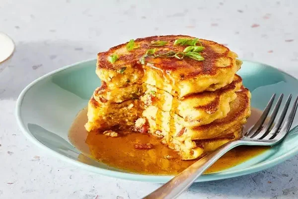

"Featured Recipe"
Mancakes
This mancakes recipe shows that sweet and savory combinations can be delicious when done right. With bacon, cheese, and onions, it’s no surprise these flavors work well together. The chipotle-spiced maple syrup ties everything together for a surprisingly tasty result.
Top 3 Recipes
Spaghetti Aglio e Olio
No two aglio e olio recipes are alike, but this one is pretty true to the classic method. The key is slowly toasting the garlic slices to a perfect golden brown in the olive oil. If it's too light, you don't get the full flavor and if it's too dark it gets bitter. My advice? Do it perfectly.
Grilled Cheese Sandwich
Learn how to make a grilled cheese sandwich in a nonstick pan with buttered bread and American Cheddar for a classic hot sandwich.
Chicken Stir Fry
This chicken stir fry recipe is packed with veggies and a delicious sweet and savory soy, ginger, and garlic sauce that gets a kick from chili flakes. Serve with white or brown rice for a quick and easy weeknight dinner.